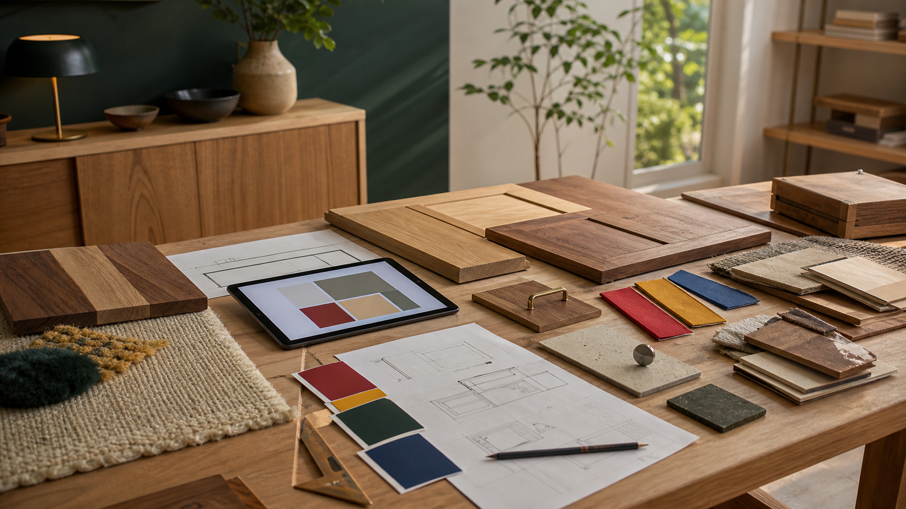

2026.07.22 가구·인테리어·목공 일일 트렌드

오늘의 흐름은 "제품을 많이 보여주는 매장"에서 "상담, 제안, 조합을 설계하는 접점"으로 이동하는 모습입니다. 대형 브랜드는 소형 계획 매장을 열고, 유통사는 디자이너 협업과 행사형 소싱으로 고객의 방문 이유를 만듭니다. 동시에 주방과 수납은 보이지 않는 디테일의 완성도가 평가 기준이 되고, 러그와 직물은 단품 액세서리가 아니라 가구와 함께 제안되는 공간 소재로 재배치되고 있습니다.
1. IKEA는 샌디에이고 남부에 계획·픽업형 소형 접점을 연다
IKEA 미국 사이트는 South Bay Plan and order point with pick-up이 2026년 7월 22일 샌디에이고 Southland Plaza Shopping Center에 문을 연다고 안내했습니다. 이 지점은 대형 창고형 매장이 아니라 쇼룸, 1:1 상담, 주방·침실·욕실·소형공간 계획, 주문과 배송, 픽업 서비스를 결합한 형식입니다. 고객은 큰 가구를 직접 들고 가기보다 공간을 함께 설계하고 주문한 뒤 배송받는 구조입니다.
왜 중요할까. 맞춤 원목가구 공방도 모든 제품을 전시장에 쌓아두기보다 상담형 접점을 강화할 수 있습니다. 식탁, 수납장, 책상처럼 부피가 큰 품목은 실물 한두 점과 수종 샘플, 마감판, 손잡이, 도면 템플릿, 배송·설치 안내를 묶어 "계획하는 방문"으로 설계해야 고객의 이동 시간이 설득됩니다.
- IKEA South Bay Plan and order point with pick-up 공식 안내 · 2026.07.22 오픈 안내 확인
2. Target은 Rosie Assoulin 협업으로 홈 카테고리에 강한 색을 넣는다
Target은 7월 21일 Rosie Assoulin x Target 협업을 발표했습니다. 7월 25일 출시되는 한정 컬렉션은 의류와 액세서리뿐 아니라 디자이너의 첫 다품목 홈 카테고리 구성을 포함하며, 대부분 제품을 50달러 이하로 제안한다고 밝혔습니다. 보도자료는 Rosie Assoulin의 낙관적인 실루엣과 선명한 색 사용을 홈 제품으로 확장한다는 점을 강조합니다.
왜 중요할까. 원목가구는 안정적인 배경재이지만, 고객은 계절마다 색을 바꾸고 싶어 합니다. 목간은 가구 자체를 과하게 채색하기보다 쿠션, 러너, 소형 선반, 손잡이, 소품 받침처럼 교체 쉬운 부위에 강한 색을 연결하는 패키지를 만들 수 있습니다. 공모전 제안서에서도 "오래 쓰는 목재 구조 + 바꿀 수 있는 색 요소"는 지속가능성과 트렌드 대응을 동시에 설명하는 언어가 됩니다.
- Target 공식 보도자료, Rosie Assoulin x Target · 2026.07.21
3. 수상 주방 사례는 숨은 수납과 구조 보강을 전면 가치로 만든다
PRNewswire를 통해 공개된 EA Home Design 발표는 7월 21일 Northern Virginia 주방 리모델링 사례가 2026 Möbel Best Kitchen Design과 Crystal Cabinet Works Design Award를 받았다고 전했습니다. 보도자료는 33피트 매립 보, Wolf와 Sub-Zero 가전, Dekton 상판과 후드, 맞춤 캐비닛, 숨은 콘센트, 내부 조명 유리문 등을 수상 프로젝트의 핵심 요소로 설명했습니다.
왜 중요할까. 고객은 수납장의 겉모습보다 매일 쓰는 순간의 편의에서 품질을 체감합니다. 목간의 붙박이장, 주방 보조장, 거실 수납장은 콘센트 위치, 내부 조명, 문짝 간격, 힌지 조정, 하중 보강을 견적서와 포트폴리오 설명에 명확히 써야 합니다. 보이지 않는 구조를 사진과 단면 도면으로 보여주면 가격 설명이 훨씬 쉬워집니다.
4. Heimtextil 2027은 러그와 카펫을 유통 채널별로 재편한다
Messe Frankfurt는 7월 20일 Heimtextil 2027의 Carpets & Rugs 구역을 새 구조와 프리미엄 세그먼트로 강화한다고 발표했습니다. Halls 11.0, 12.0, 12.1은 대형 제조사와 주요 바이어, Hall 3.1은 기계제 카펫과 섬유·원사·기술, Hall 3.0은 핸드노티드 원오프 피스와 바닥 솔루션을 다루는 식입니다. Hall 11.0에는 독립 심사위원이 선정하는 Carpets & Rugs Excellence가 새로 생깁니다.
왜 중요할까. 러그는 가구 아래에 까는 부속품이 아니라 가구의 크기, 다리 형태, 목재 색을 결정하는 기준이 됩니다. 목간은 식탁과 소파 테이블을 제안할 때 러그 크기, 파일 높이, 의자 이동성, 청소 동선을 함께 체크하는 상담표를 만들 필요가 있습니다. 특히 원목 다리 끝과 러그 마찰, 의자 끌림, 바닥 보호 패드를 세트로 안내하면 설치 후 불만을 줄일 수 있습니다.
- Messe Frankfurt 공식 발표, Heimtextil 2027 Carpets & Rugs · 2026.07.20
- Home Textiles Today, Heimtextil 2027 layout report · 2026.07.20
5. Las Vegas Market은 3,500개 브랜드 규모의 여름 소싱 장으로 열린다
Las Vegas Market 공식 등록 페이지와 일정 안내는 2026년 여름 마켓이 7월 26일부터 30일까지 열린다고 공지했습니다. 이 행사는 가구, 홈 데코, 선물, 디자인 분야 전문가 대상의 B2B 마켓이며, 공식 소개는 3,500개 이상의 브랜드와 영구·임시 쇼룸을 통해 신제품, 베스트셀러, 최신 혁신을 직접 확인하는 장이라고 설명합니다. Home Accents Today도 7월 20일 Las Vegas Market에서 주목할 신제품 다섯 가지를 정리하며 여름 마켓의 상품 발견 흐름을 보도했습니다.
왜 중요할까. 공방이 해외 전시를 바로 따라갈 필요는 없지만, 마켓식 사고는 유용합니다. 목간은 분기별로 "신규 샘플 5개"를 정해 문짝, 상판, 손잡이, 소형 소품, 패키지 견적을 한 번에 보여주는 작은 쇼룸 데이를 운영할 수 있습니다. 온라인 글과 현장 상담을 같은 주제로 맞추면 방문 이유와 콘텐츠가 자연스럽게 연결됩니다.
- Las Vegas Market 공식 등록 안내 · 2026.07.26~30 일정 확인
- Home Accents Today, Las Vegas Market New & Noteworthy · 2026.07.20
오늘의 실무 인사이트
- 전시장은 재고 진열보다 상담 동선으로 설계한다. 대표 제품, 수종 샘플, 마감판, 손잡이, 도면, 배송·설치 안내를 한 테이블에 놓고 고객이 치수와 용도를 바로 말할 수 있게 구성하면 작은 공간도 충분히 판매 접점이 됩니다.
- 색은 구조가 아니라 교체 가능한 부품에 넣는다. 원목 프레임은 오래가는 비례와 마감으로 잡고, 패브릭, 러너, 소형 선반, 손잡이, 소품 트레이에 강한 색을 배치하면 유행 대응과 장기 사용성을 동시에 잡을 수 있습니다.
- 보이지 않는 품질을 견적서에 보이게 쓴다. 내부 조명, 콘센트, 하중 보강, 경첩 등급, 문짝 간격, 벽 고정, 리피니시 가능성을 사진과 함께 설명하면 맞춤 제작의 가격 근거가 감성 문구보다 선명해집니다.
- 러그와 바닥 조건을 가구 설계 체크리스트에 넣는다. 의자 다리 끝, 러그 파일 높이, 바닥 보호 패드, 청소 동선은 설치 후 사용감에 바로 영향을 줍니다. 식탁과 소파 테이블 상담에서 바닥재와 러그 정보를 먼저 확인해야 합니다.
- 매달 하나의 작은 마켓을 만든다. 신제품을 크게 늘리기보다 샘플 5개와 짧은 설명, 현장 사진, 블로그 글을 묶어 공개하면 공방 운영 리듬과 온라인 콘텐츠가 함께 쌓입니다.